Interaction Power: Power analyses for 2-way interactions with covariates
David AA Baranger
Source:vignettes/articles/InteractionPower2waycovsvignette.Rmd
InteractionPower2waycovsvignette.RmdThis vignette describes how to run power analyses for 2-way interactions that include covariates. It assumes you are already familiar with power analyses for 2-way interactions. If you aren’t, check out our tutorial paper or the main vignette.
Introduction
A two-way interaction analysis with two covariates (for example, but any number is allowable) take the form:
\[ Y \sim \beta_0 + X_1\beta_1 + X_2\beta_2 + X_1X_2\beta_3+ C_1\beta_5 + C_2\beta_6 + C_1X_1\beta_7 + C_1X_2\beta_8 + C_2X_1\beta_9 + C_2X_2\beta_{10} + \epsilon \]
Where \(C_i\) are the covariates, and \(C_iX_i\) are interactions between the covariates and the main variables of interest. The inclusion of the \(C_iX_i\) terms may surprise some users. However, it is well established that failure to include them can lead to false-positive results, because of omitted variable bias. This can occur not only when \(C_iX_i\) is independent predictor of \(Y\), but also simply when \(cor(X_i,C_i)\) is non-zero (i.e., when a covariate is correlated with either of the main interaction terms). A few relevant citations: Hull et al., 1992, Yzerbyt et al., 2004, Keller, 2014, and blogs: Baranger, and Simonsohn.
Running an analysis
First, the function generate.interaction.cov.input() is
used to setup the input correlations for the power analysis. The only
input is the number of covariates. This generates a named list. All
correlations are by default 0 and all reliabilites are
1.
library(InteractionPoweR)
power.input = generate.interaction.cov.input(c.num = 2) # number of covariates
head(power.input$correlations)## $r.y.x1
## [1] 0
##
## $r.y.x2
## [1] 0
##
## $r.y.c1
## [1] 0
##
## $r.y.c2
## [1] 0
##
## $r.y.x1x2
## [1] 0
##
## $r.y.c1x1
## [1] 0
head(power.input$reliability)## $rel.y
## [1] 1
##
## $rel.x1
## [1] 1
##
## $rel.x2
## [1] 1
##
## $rel.c1
## [1] 1
##
## $rel.c2
## [1] 1Modify the list as-needed for your own power analysis:
power.input$correlations$r.y.x1 = .3
power.input$correlations$r.y.x2 = .2
power.input$correlations$r.y.c1 = .1
power.input$correlations$r.y.c2 = .2
power.input$correlations$r.y.x1x2 = seq(0.01,.1,.01) # inputs can be single values or vectors
power.input$correlations$r.x1.x2 = .2
power.input$correlations$r.c1.c2 = .3
power.input$correlations$r.x1.c1 = .1
power.input$correlations$r.x2.c1 = .1Now we run the power analysis with the
power_interaction_r2_covs() function:
pwr.analysis = power_interaction_r2_covs(cov.input =power.input, # our parameters
N = c(1000)
)## Performing 10 analyses##
## Attaching package: 'dplyr'## The following objects are masked from 'package:stats':
##
## filter, lag## The following objects are masked from 'package:base':
##
## intersect, setdiff, setequal, union
pwr.analysis## pwr r.y.x1 r.y.x2 r.y.c1 r.y.c2 r.y.x1x2 r.y.c1x1 r.y.c1x2 r.y.c2x1
## 1 0.06378639 0.3 0.2 0.1 0.2 0.01 0 0 0
## 2 0.10625113 0.3 0.2 0.1 0.2 0.02 0 0 0
## 3 0.17927387 0.3 0.2 0.1 0.2 0.03 0 0 0
## 4 0.28210473 0.3 0.2 0.1 0.2 0.04 0 0 0
## 5 0.40826630 0.3 0.2 0.1 0.2 0.05 0 0 0
## 6 0.54510518 0.3 0.2 0.1 0.2 0.06 0 0 0
## 7 0.67680533 0.3 0.2 0.1 0.2 0.07 0 0 0
## 8 0.78938929 0.3 0.2 0.1 0.2 0.08 0 0 0
## 9 0.87489380 0.3 0.2 0.1 0.2 0.09 0 0 0
## 10 0.93259046 0.3 0.2 0.1 0.2 0.10 0 0 0
## r.y.c2x2 r.x1.x2 r.x1.c1 r.x1.c2 r.x1.c1x2 r.x1.c2x2 r.x2.c1 r.x2.c2
## 1 0 0.2 0.1 0 0 0 0.1 0
## 2 0 0.2 0.1 0 0 0 0.1 0
## 3 0 0.2 0.1 0 0 0 0.1 0
## 4 0 0.2 0.1 0 0 0 0.1 0
## 5 0 0.2 0.1 0 0 0 0.1 0
## 6 0 0.2 0.1 0 0 0 0.1 0
## 7 0 0.2 0.1 0 0 0 0.1 0
## 8 0 0.2 0.1 0 0 0 0.1 0
## 9 0 0.2 0.1 0 0 0 0.1 0
## 10 0 0.2 0.1 0 0 0 0.1 0
## r.x2.c1x1 r.x2.c2x1 r.c1.c2 r.c1.x1x2 r.c1.c2x1 r.c1.c2x2 r.c2.x1x2
## 1 0 0 0.3 0 0 0 0
## 2 0 0 0.3 0 0 0 0
## 3 0 0 0.3 0 0 0 0
## 4 0 0 0.3 0 0 0 0
## 5 0 0 0.3 0 0 0 0
## 6 0 0 0.3 0 0 0 0
## 7 0 0 0.3 0 0 0 0
## 8 0 0 0.3 0 0 0 0
## 9 0 0 0.3 0 0 0 0
## 10 0 0 0.3 0 0 0 0
## r.c2.c1x1 r.c2.c1x2 rel.y rel.x1 rel.x2 rel.c1 rel.c2 alpha N
## 1 0 0 1 1 1 1 1 0.05 1000
## 2 0 0 1 1 1 1 1 0.05 1000
## 3 0 0 1 1 1 1 1 0.05 1000
## 4 0 0 1 1 1 1 1 0.05 1000
## 5 0 0 1 1 1 1 1 0.05 1000
## 6 0 0 1 1 1 1 1 0.05 1000
## 7 0 0 1 1 1 1 1 0.05 1000
## 8 0 0 1 1 1 1 1 0.05 1000
## 9 0 0 1 1 1 1 1 0.05 1000
## 10 0 0 1 1 1 1 1 0.05 1000As always, we can plot the power curve:
plot_power_curve(power_data = pwr.analysis,x = "r.y.x1x2")
And we can estimate where the power curve intersects some desired level of power:
power_estimate(power_data = pwr.analysis,x = "r.y.x1x2",power_target = 0.8)## [1] 0.08112818Even though analytic power analyses are fast, with so many parameters
we can easily reach a point where the analysis will take a long time to
run. Say for instance we are interested in testing out 10 different
values of 4 different parameters - that’s 10,000 power analyses. At that
point, it can be helpful to run things in parallel. Parallel analyses
can be run using the cl flag. cl=4 is probably
a reasonable value for most personal computers.